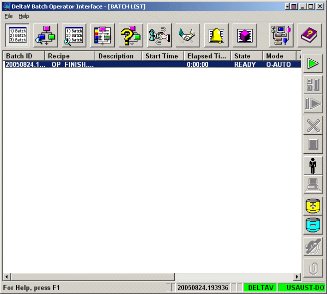

The Batch Operator Interface screens
The Batch Operator Interface is a graphical environment used by the operator to monitor and control all automated batch operations. It is the application provided by the DeltaV system that is immediately available to issue batch commands. The Batch Operator Interface provides the operator many different views into the batch production process by providing the following Batch Operator Interface screens:
Batch List
Procedure as PFC
Procedure as Table
Event Journal
Unacknowledged Prompts
Phase Control
Arbitration
Active Phase Summary
Alarm Summary
System Configuration and Defaults

Operators can easily switch between the screens by selecting the appropriate button on the toolbar at the top of the Batch Operator Interface. Each screen provides a high level of information. It is necessary for operators to have a good understanding of each screen's primary function so that they can choose the best screen for their specific monitoring and control needs.
To refresh any screen, the operator can press the F5 key. Refreshing the screen forces the application to request updated information and repopulates the screen. The Batch Operator Interface normally refreshes the data on its own; however, you can force this by pressing the F5 key.
For a detailed explanation of each of the Batch Operator Interface screens, refer to the appropriate sections.